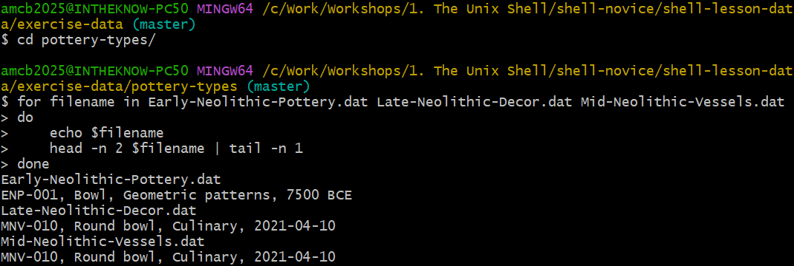
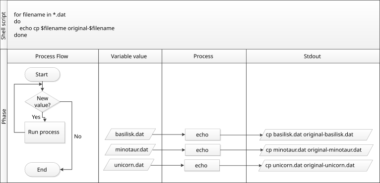

Automating Repetitive Tasks with Loops
Last updated on 2026-08-24 | Edit this page
Estimated time: 50 minutes
Overview
Questions
- How can I automate repetitive tasks across multiple files?
Objectives
- Construct a loop to execute commands individually on each file within a set.
- Monitor the iteration variable’s value throughout the loop’s execution.
- Distinguish between a variable’s name and its value.
- Understand why it’s advised to avoid spaces and certain punctuation in file names.
- Learn how to view and execute recently used commands without retyping them.
Loops provide a way to repeat a set of commands for each item in a list, significantly enhancing automation and efficiency. Like wildcards and tab completion, loops help minimize typing and the potential for errors.
Imagine we have numerous genome files such as
Early-Neolithic-Pottery.dat,
Late-Neolithic-Decor.dat, and
Mid-Neolithic-Vessels.dat. Although our example uses the
exercise-data/pottery-types directory with just three
files, the concept is scalable to hundreds or more.
These files share a format: the first three lines contain the common name, classification, and an update date, followed by DNA sequences. To examine these files:
Our goal is to extract and print the classification from the second
line of each file. This requires executing head -n 2 on
each file and piping that to tail -n 1. To achieve this
efficiently, we use a loop, illustrated in this generalized form:
BASH
# "for" initiates the loop
for thing in list_of_things
do
# Commands within the loop (indentation enhances readability)
operation_using $thing
done Applying this to our task:
BASH
$ for filename in Early-Neolithic-Pottery.dat Late-Neolithic-Decor.dat Mid-Neolithic-Vessels.dat
> do
> echo $filename
> head -n 2 $filename | tail -n 1
> doneOUTPUT
Early-Neolithic-Pottery.dat
ENP-001, Bowl, Geometric patterns, 7500 BCE
Late-Neolithic-Decor.dat
MNV-010, Round bowl, Culinary, 2021-04-10
Mid-Neolithic-Vessels.dat
MNV-010, Round bowl, Culinary, 2021-04-10This demonstrates how loops can streamline the process of performing repetitive tasks on multiple files, making it easier to manage and analyze large datasets.

Understanding Shell Prompts
As we type a loop, the shell prompt changes from $ to
> and then back to $. The >
prompt appears to indicate that the command line is incomplete. A
semicolon ; can be used to separate commands when they are
entered on the same line.
Loops in the shell allow us to execute a command or a group of
commands for each item in a list. During each loop iteration, an item
from the list is assigned to a variable, and the
specified commands are executed. To use the value stored in the
variable, we precede its name with $, signaling to the
shell to substitute the variable’s name with its value.
In our example, we iterate over a list of filenames:
Early-Neolithic-Pottery.dat,
Late-Neolithic-Decor.dat, and
Mid-Neolithic-Vessels.dat. Each iteration assigns a
different filename to the variable filename and processes
it with head and tail commands. Initially,
$filename is Early-Neolithic-Pottery.dat, and
the loop executes head on this file, passing the output to
tail, which prints its second line. The process repeats for
Late-Neolithic-Decor.dat and
Mid-Neolithic-Vessels.dat, with the loop ending after three
iterations due to the list’s size.
Clarifying Symbol Usage
The > symbol is used both as a shell prompt and for
redirecting output, while $ is used as a shell prompt and
for accessing variable values. When the shell displays
> or $, it’s prompting for input. When
you type these symbols, you’re instructing the shell to
redirect output or retrieve a variable’s value.
Variables in loops can be named anything that makes the code
understandable. While the shell doesn’t care about variable names,
choosing meaningful names like filename instead of
x or temperature helps make the code clearer.
Although ${filename} and $filename are
functionally identical, using braces ({}) around variable
names can help delineate them, especially in complex expressions.
Remember, the choice of variable names (thing,
filename, x, temperature) should
always prioritize clarity and meaning to ensure the code remains
accessible and understandable to others. Loops are versatile and can be
used to process not just filenames but also numbers, data subsets, and
more, showcasing the flexibility and power of shell scripting.
Crafting a Loop
How would you construct a loop to print the numbers from 0 to 9?
Looping Over Files
Given the output from ls *.txt in the
shell-lesson-data/exercise-data/artifact-catalogs
directory:
OUTPUT
Animal-Figurines-List.txt Artifact-Aging-Data.txt Excavation-Finds-Report.txt Neolithic-Tools-Inventory.txt Pillar-Symbols-Analysis.txt Stone-Carvings-Catalogue.txtWhat would be the result of executing the following scripts?
First script:
Second script:
Why do these two loops produce different outputs?
The first script repeats the listing of all .txt files
for each iteration of the loop, because ls *.txt is
evaluated to list all .txt files in the directory,
regardless of the loop variable.
OUTPUT
Animal-Figurines-List.txt Artifact-Aging-Data.txt Excavation-Finds-Report.txt Neolithic-Tools-Inventory.txt Pillar-Symbols-Analysis.txt Stone-Carvings-Catalogue.txt
Animal-Figurines-List.txt Artifact-Aging-Data.txt Excavation-Finds-Report.txt Neolithic-Tools-Inventory.txt Pillar-Symbols-Analysis.txt Stone-Carvings-Catalogue.txt
Animal-Figurines-List.txt Artifact-Aging-Data.txt Excavation-Finds-Report.txt Neolithic-Tools-Inventory.txt Pillar-Symbols-Analysis.txt Stone-Carvings-Catalogue.txt
Animal-Figurines-List.txt Artifact-Aging-Data.txt Excavation-Finds-Report.txt Neolithic-Tools-Inventory.txt Pillar-Symbols-Analysis.txt Stone-Carvings-Catalogue.txt
Animal-Figurines-List.txt Artifact-Aging-Data.txt Excavation-Finds-Report.txt Neolithic-Tools-Inventory.txt Pillar-Symbols-Analysis.txt Stone-Carvings-Catalogue.txt
Animal-Figurines-List.txt Artifact-Aging-Data.txt Excavation-Finds-Report.txt Neolithic-Tools-Inventory.txt Pillar-Symbols-Analysis.txt Stone-Carvings-Catalogue.txtThe second script lists each .txt file individually per
iteration because $datafile dynamically represents each
.txt file in turn as the loop proceeds.
OUTPUT
Animal-Figurines-List.txt
Artifact-Aging-Data.txt
Excavation-Finds-Report.txt
Neolithic-Tools-Inventory.txt
Pillar-Symbols-Analysis.txt
Stone-Carvings-Catalogue.txtThe difference arises because the first loop does not utilize the
loop variable within the loop’s body, listing all .txt
files each time. In contrast, the second loop leverages the loop
variable to list each file individually.
Filtering Specific Files for Operation
Within the
shell-lesson-data/exercise-data/artifact-catalogs
directory, evaluate the execution of this loop:
Options:
- No files are listed.
- All files are listed.
- Only
Artifact-Aging-Data.txtis listed. - Only
Animal-Figurines-List.txtandArtifact-Aging-Data.txtare listed.
Option 4 is correct. The pattern A* matches any file
beginning with ‘A’, resulting in the listing of
Animal-Figurines-List.txt and
Artifact-Aging-Data.txt.
Filtering Specific Files for Operation (continued)
Option 5 correctly identifies the outcome. The pattern
*A* matches files containing ‘A’ anywhere in their names,
thus listing Animal-Figurines-List.txt and
Artifact-Aging-Data.txt.
Writing to a File Within a Loop
In the shell-lesson-data/exercise-data/artifact-catalogs
directory, what is the effect of the following loop?
Options:
- Lists all
.txtfiles, saving the content of the first file processed tocombined-logs.txt. - Lists all
.txtfiles, combining their contents intocombined-logs.txt. - Lists
Animal-Figurines-List.txt,Artifact-Aging-Data.txt,Excavation-Finds-Report.txt,Neolithic-Tools-Inventory.txt,Pillar-Symbols-Analysis.txt, andStone-Carvings-Catalogue.txt, with onlyStone-Carvings-Catalogue.txt’s content incombined-logs.txt. - None of the above.
Option 3 is accurate. Each file’s name is echoed, but
combined-logs.txt is overwritten during each iteration,
ultimately only containing the content of
Stone-Carvings-Catalogue.txt.
Combining Files in a Loop
Considering the
shell-lesson-data/exercise-data/artifact-catalogs
directory, assess the result of this loop:
Options:
- Overwrites all-records.txt on each iteration, so it ends up containing only the last file’s content.
- Copies the content of
Artifact-Aging-Data.txtintoall-records.txt. - Concatenates the content from
Animal-Figurines-List.txt,Artifact-Aging-Data.txt,Excavation-Finds-Report.txt,Neolithic-Tools-Inventory.txt,Pillar-Symbols-Analysis.txt, andStone-Carvings-Catalogue.txtintoall-records.txt. - Displays the content of all
.txtfiles on the screen and saves it toall-records.txt.
Option 3 describes the process accurately. The >>
operator appends the content of each .txt file to
all-records.txt, compiling a comprehensive document without
displaying any output to the screen.
Venturing into the
shell-lesson-data/exercise-data/pottery-types directory,
let’s examine a complex loop example:
This script begins by identifying all .dat files, then
employs a combination of commands for processing. Initially, the
echo command reveals the name of the file under
consideration, thus clarifying which file is being processed at any
moment. For example, utilizing echo to print a message:
produces:
OUTPUT
hello pottery worldIn this context, echo $pottery prints the name of the
current file in the loop. Directly inserting the variable like
$pottery in a command might inadvertently try to run the
file name as a command. The loop smartly extracts lines 81-100 from each
file, provided it contains at least 100 lines.
Managing Spaces in Filenames
Spaces separate list items in loops. Thus, if an item (such as a file name) contains spaces, it must be encapsulated in quotes, and so should the loop variable when utilized. For filenames incorporating spaces, such as:
Early Neolithic Pottery.dat
Late Neolithic Decor.datLoop execution would require quotes. (Copies of these two files live
in exercise-data/spaces-demo/, so you can try this yourself
with cd ../spaces-demo.)
BASH
$ for filename in "Early Neolithic Pottery.dat" "Late Neolithic Decor.dat"
> do
> head -n 100 "$filename" | tail -n 20
> doneSteering clear of spaces or special characters in filenames eases
command application. Without quotes, the head command
misreads files with spaces in their names, leading to errors.
Testing by excluding quotes around $filename in the loop
reveals the consequences on filenames with spaces. The absence of quotes
generates errors, as the shell misinterprets the filenames:
OUTPUT
head: cannot open ‘Early' for reading: No such file or directory
head: cannot open ‘Neolithic' for reading: No such file or directory
head: cannot open ‘Pottery.dat' for reading: No such file or directory
head: cannot open ‘Late' for reading: No such file or directory
...To alter files in
shell-lesson-data/exercise-data/pottery-types while
preserving the originals, straightforward copying using wildcards like
cp *.dat original-*.dat fails due to syntax constraints.
Such an attempt triggers an error because cp cannot decode
original-*.dat as a destination directory or file. Instead,
a loop facilitates individual file manipulation and renaming:
This method allows for precise operation on each file within the
pottery-types directory, appending original-
to the beginning of each file’s name to signify a backup copy.
Each iteration copies a file, prefixing the original filename with
original-, thus preserving originals while enabling
modifications. Without output from cp, verifying the loop’s
execution might require manual checks. However, integrating
echo for command previewing offers a debugging strategy
without actual command execution.
Illustrated here, the process underscores the necessity of
echo for verifying loop commands prior to execution:

Cecil’s Pipeline: Script Execution
Cecil proceeds to analyze their data with
ancientstats.sh, a script that computes statistics from
protein sample files, requiring an input and an output file. Initially,
they verify file selection accuracy, focusing on files ending in ‘A’ or
‘B’:
This produces a list of target files. To envision the output filenames, he tweaks the loop to prefix input filenames with ‘stats’:
Before running ancientstats.sh, they test command
generation using echo. Once confident, they replace
echo with the actual script execution command:
However, the lack of immediate feedback prompts them to reintroduce
echo for progress monitoring. Adjusting the loop
accordingly, they ensure visibility of the ongoing process:
BASH
$ for file in NENE*A.txt NENE*B.txt; do echo $file; bash ancientstats.sh $file stats-$file; doneCecil’s adjustments reflect iterative development and testing
practices, emphasizing the utility of echo for debugging
and the iterative refinement of shell commands.
Cecil’s execution of their data processing script indicates it will complete in about two hours. They verify the output quality in another terminal window and, satisfied, take a well-deserved break.
Revisiting Command History
Leveraging history to view and execute past commands is
another efficient way to repeat tasks. Using ! followed by
the command number from the history list reruns that command,
streamlining repetitive tasks.
Enhancing Command History Interaction
Several shortcuts enhance interaction with the command history:
- Ctrl+R initiates a reverse search (‘reverse-i-search’) to locate the most recent command matching entered text. Press Ctrl+R again to find earlier matches. Use the left and right arrow keys to edit the command before execution.
-
!!fetches the last command executed, offering an alternative to the up-arrow key for repetition. -
!$captures the last word of the previous command, useful for quick reference to files or directories in subsequent commands.
Previewing Loop Commands
To prevent errors when executing loops, especially with file
modifications, a “dry run” using echo can preview the
commands without executing them. Consider wanting to append the contents
of several .pdb files into all.txt. Examine
these loop variations for such a preview:
Version 1:
Version 2:
The first version is not a true dry run: because the
>> is left unquoted, bash treats it as real
redirection and appends lines like cat basilisk.pdb into
all.txt.
Version 2, however, is the correct dry run: enclosing the command in
quotes means echo displays it without executing the
redirection, so all.txt is untouched.
Previewing Loop Commands (continued)
This nested loop creates directories for each compound and temperature combination, demonstrating how loops within loops (nested loops) can automate complex directory structures for organizing data.
- A
forloop executes commands for each item in a list. - Use a variable within a loop to refer to the current item.
- Expand a variable’s value with
$name, with${name}as an alternative syntax. - Avoid spaces, quotes, and wildcards like ’*’ or ‘?’ in filenames to simplify command usage.
- Consistent naming and wildcard patterns facilitate file selection for loops.
- Navigate command history with the up-arrow key and Ctrl+R for search.
- Repeat commands with
historyand![number]based on their history number.